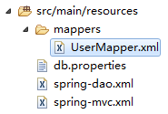
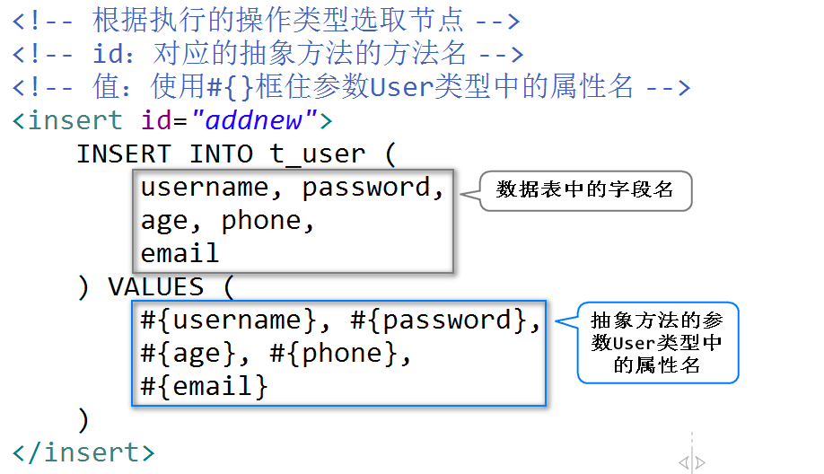

【前序作业】
创建新的数据库
tedu_ums；CREATE DATABASE tedu_ums;
在新数据库中创建数据表
t_user，表中至少包含id, username, password, age, phone, email这6个属性；USE tedu_ums;
CREATE TABLE t_user (
id INT AUTO_INCREMENT, username VARCHAR(20) UNIQUE NOT NULL, password VARCHAR(20) NOT NULL, age INT, phone VARCHAR(20), email VARCHAR(50), PRIMARY KEY(id)) DEFAULT CHARSET=utf8;
添加不少于10条数据；
INSERT INTO t_user
(username, password, age, phone, email)VALUES
('root', '1234', 18, '13800138001', 'root@tedu.cn'), ('admin', '4567', 19, '13800138002', 'admin@tedu.cn'), ('jack', '1234', 20, '13800138003', 'jack@tedu.cn'), ('tom', '1234', 22, '13800138010', 'tom@tedu.cn'), ('jerry', '1234', 25, '13800138011', 'jerry@tedu.cn'), ('rose', '1234', 21, '13800138004', 'rose@tedu.cn'), ('mike', '1234', 22, '13800138005', 'mike@tedu.cn'), ('lily', '1234', 23, '13800138006', 'lily@tedu.cn'), ('lucy', '1234', 24, '13800138007', 'lucy@tedu.cn'), ('mary', '1234', 25, '13800138008', 'mary@tedu.cn'), ('alex', '1234', 26, '13800138009', 'alex@tedu.cn');查询所有数据；
SELECT id,username,password,age,phone,email FROM t_user;
根据id查询某用户的详细信息；
SELECT id,username,password,age,phone,email FROM t_user WHERE id=8;
根据username查询某用户的详细信息；
SELECT id,username,password,age,phone,email FROM t_user WHERE username=’jack’;
查询当前表中数据的数量；
SELECT COUNT(id) FROM t_user;
查询年龄大于20的前3条数据；
SELECT id,username,password,age,phone,email FROM t_user WHERE age>20 LIMIT 0,3;
删除id=3的数据；
DELETE FROM t_user WHERE id=3;
删除id=6、id=8、id=9的数据；
DELETE FROM t_user WHERE id IN (6,8,9);
DELETE FROM t_user WHERE id=6 OR id=8 OR id=9;
将id<7的所有数据的password设置为1234。
UPDATE t_user SET password=’1234’ WHERE id<7;
1. MYBATIS简介
MYBATIS是持久层框架，大大的简化了持久层开发。
当使用MYBATIS框架时，开发人员不必再编写繁琐的JDBC代码，只需要定义好每个功能对应的抽象方法与需要执行的SQL语句即可！
2. 基本使用
2.1. 添加依赖
需要在pom.xml中添加MyBatis的依赖：
<dependency>
<groupId>org.mybatis</groupId>
<artifactId>mybatis</artifactId>
<version>3.4.6</version>
</dependency>
然后添加MyBatis整合Spring的依赖：
<dependency>
<groupId>org.mybatis</groupId>
<artifactId>mybatis-spring</artifactId>
<version>1.3.2</version>
</dependency>
其底层实现是基于JDBC的，所以，还需要添加spring-jdbc的依赖，需要注意的是：此次使用的版本必须与spring-webmvc的保持一致：
<dependency>
<groupId>org.springframework</groupId>
<artifactId>spring-jdbc</artifactId>
<version>4.3.9.RELEASE</version>
</dependency>
根据使用的数据库，添加数据库连接驱动的依赖：
<dependency>
<groupId>mysql</groupId>
<artifactId>mysql-connector-java</artifactId>
<version>8.0.13</version>
</dependency>
添加数据源的依赖：
<dependency>
<groupId>commons-dbcp</groupId>
<artifactId>commons-dbcp</artifactId>
<version>1.4</version>
</dependency>
2.2. 数据库连接
在src/main/resources下创建db.properties文件，用于配置数据库连接的相关信息：
url=jdbc:mysql://localhost:3306/tedu_ums?useUnicode=true&characterEncoding=utf-8&serverTimezone=Asia/Shanghai
driver=com.mysql.cj.jdbc.Driver
username=root
password=root
initialSize=2
maxActive=50
在项目中准备名为spring-dao.xml的Spring配置文件，并加载以上数据库的配置文件：
<!-- 加载数据库的配置文件 -->
<util:properties
location="classpath:db.properties" />
然后，将以上读取到的配置值应用于数据源BasicDataSource中：
<!-- 配置数据源 -->
<bean class="org.apache.commons.dbcp.BasicDataSource">
<property name="url"
value="#{dbConfig.url}" />
<property name="driverClassName"
value="#{dbConfig.driver}" />
<property name="username"
value="#{dbConfig.username}" />
<property name="password"
value="#{dbConfig.password}" />
<property name="initialSize"
value="#{dbConfig.initialSize}" />
<property name="maxActive"
value="#{dbConfig.maxActive}" />
</bean>
以上配置时，各文件之间的关系如下图所示：

完成后，可以通过单元测试，以测试是否可以正确的获取到数据库的连接：
public class ConnectionTestCase {
@Test
public void getConnection() throws SQLException {
AbstractApplicationContext ac
= new ClassPathXmlApplicationContext(
"spring-dao.xml");
DataSource dataSource =
ac.getBean("dataSource", DataSource.class);
System.out.println(dataSource.getConnection());
ac.close();
}
}
2.3. 创建实体类
每张数据表都应该有1个对应的实体类，所以，创建cn.tedu.mybatis.entity.User类，属性的数量与类型请参考数据表的设计：
public class User implements Serializable {
private static final long serialVersionUID = 7323921614984096421L;
private Integer id;
private String username;
private String password;
private Integer age;
private String phone;
private String email;
// SET/GET，toString()
}
2.4. 创建接口，声明抽象方法
创建cn.tedu.mybatis.mapper.UserMapper接口，并在接口中声明“插入用户数据”的抽象方法：
public interface UserMapper {
Integer addnew(User user);
}
关于抽象方法，在MyBatis中，执行的操作如果是增、删、改，返回值均使用Integer，表示受影响的行数；方法的名称可以自定义，只要不违反Java的命名规则即可，另外，不允许在接口中使用重载机制；参数也可以自定义，如果执行的是增加操作，参数应该是与数据表对应的实体类的类型。
2.5. 配置接口所在的包
在MyBatis中，通过MapperScannerConfigurer类扫描持久层接口的，所以，应该在spring-dao.xml文件中进行配置：
<!-- MapperScannerConfigurer -->
<bean class="org.mybatis.spring.mapper.MapperScannerConfigurer">
<!-- 配置接口文件所在的包 -->
<property name="basePackage"
value="cn.tedu.mybatis.mapper" />
</bean>
2.6. 在XML中配置接口方法对应的SQL语句
从FTP下载somemapper.zip压缩包，得到SomeMapper.xml文件。
在src/main/resources下创建名为mappers文件夹，然后将SomeMapper.xml重命名为UserMapper.xml，并粘贴到mappers文件夹下：

其实，这些XML文件的名称并不重要，可以自由命名，通常，推荐使用与接口文件相同的名称，便于管理。
然后，编写UserMapper.xml文件中的内容，首先，根节点必须是<mapper>，且根节点的namespace表示对应的接口文件，然后，添加子节点，以对应接口中的抽象方法：

2.7. 配置XML文件的位置与数据源
MyBatis通过SqlSessionFactoryBean获取数据源，并且扫描配置了SQL语句的XML文件，最终由MyBatis框架来执行SQL语句，所以，需要在spring-dao.xml中配置SqlSessionFactoryBean：
<!-- SqlSessionFactoryBean -->
<bean class="org.mybatis.spring.SqlSessionFactoryBean">
<!-- 数据源，值为以上配置BasicDataSource节点的bean-id -->
<property name="dataSource"
ref="dataSource" />
<!-- XML文件在哪里 -->
<property name="mapperLocations"
value="classpath:mappers/*.xml" />
</bean>
2.8. 单元测试
public class UserMapperTestCase {
AbstractApplicationContext ac;
UserMapper mapper;
@Before
public void doBefore() {
ac = new ClassPathXmlApplicationContext("spring-dao.xml");
mapper = ac.getBean("userMapper", UserMapper.class);
}
@After
public void doAfter() {
ac.close();
}
@Test
public void addnew() {
User user = new User();
user.setUsername("刘GB");
user.setPassword("666");
Integer rows = mapper.addnew(user);
System.out.println("rows=" + rows);
}
}
3. 查询数据
3.1. 根据id查询某个用户的信息
首先，在UserMapper.java接口中添加该功能对应的抽象方法：
User findById(Integer id);
查询方法的返回可以根据所需要的类型来决定。
然后，在UserMapper.xml映射文件中添加新的节点配置抽象方法对应的SQL语句：
<select id="findById"
resultType="cn.tedu.mybatis.entity.User">
SELECT
id, username,
password, age,
phone, email
FROM
t_user
WHERE
id=#{id}
<select>
执行查询时，
<select>节点中必须配置resultType属性（或者是resultMap属性）。
以上方法执行时，如果查询到匹配的数据，则返回有效的User对象，如果没有匹配的数据，则返回null。